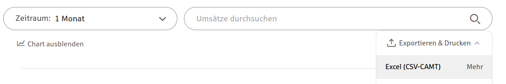
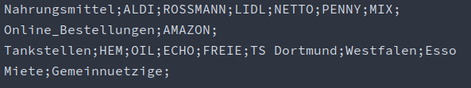
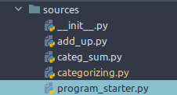
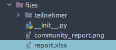

{% extends "base.html" %}
{% block body %}
Schritt für
Schritt Anleitung zur Bedienung der Software
- Laden Sie sich den Code von GitHub runter

- Installieren Sie die requirements.txt Abhängigkeiten

- Exportieren Sie eine CSV von ihrem Online-Banking 
-
Kopieren sie die CSV mit den Transaktionen in die Ordnerstruktur
files ist hier die working-directory

-
Richten Sie Ihre Kategorien ein
Der filename muss mit einem Unterstrich beginnen

-
Starten Sie das Script program_starter.py

-
Sie finden den Output unter report.xlsx

-
Beispielbilder Output


{% endblock %}